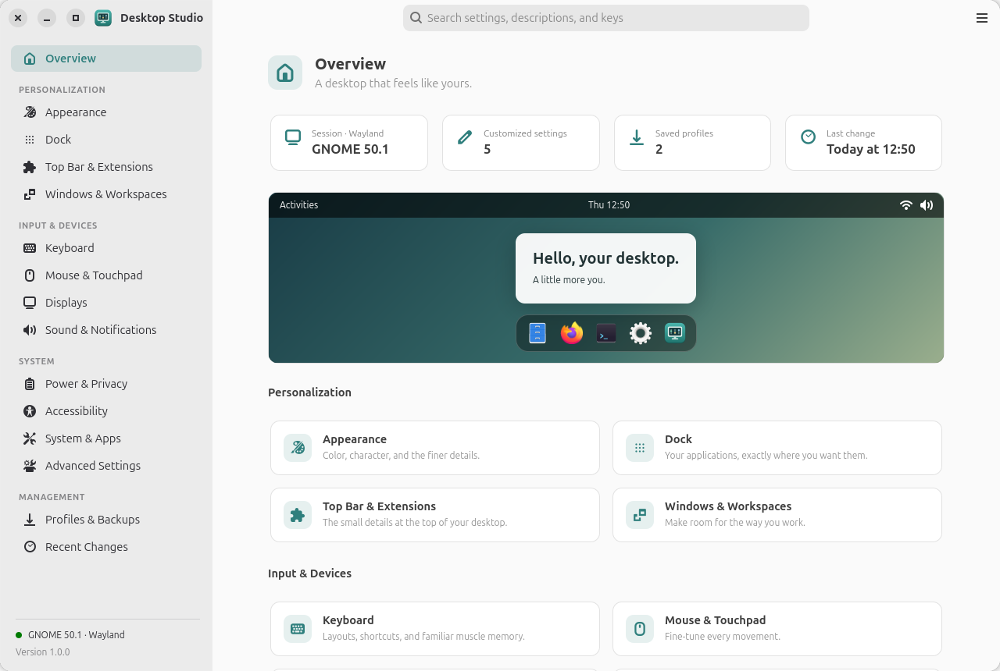
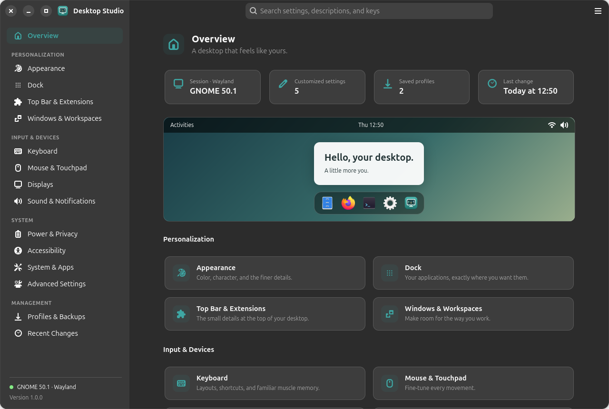
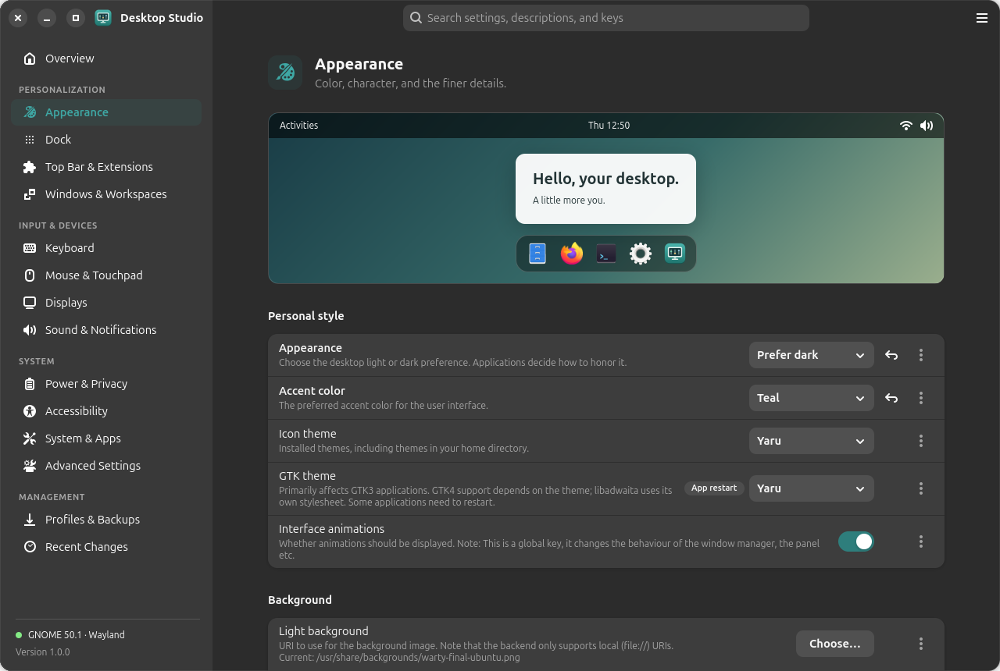
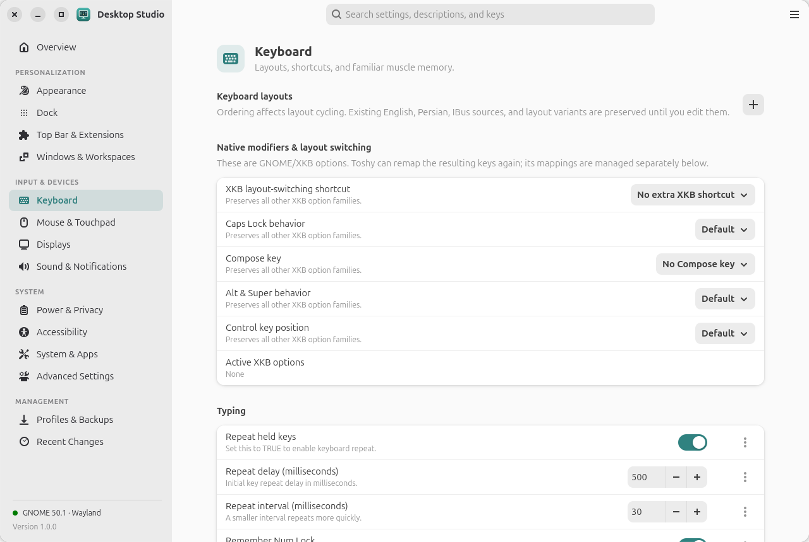
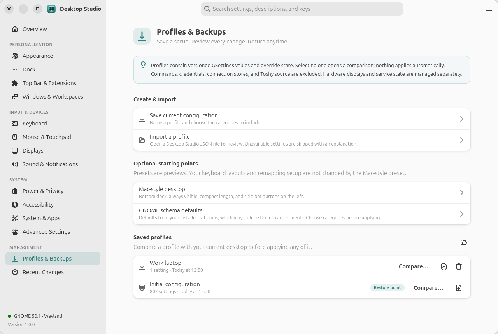
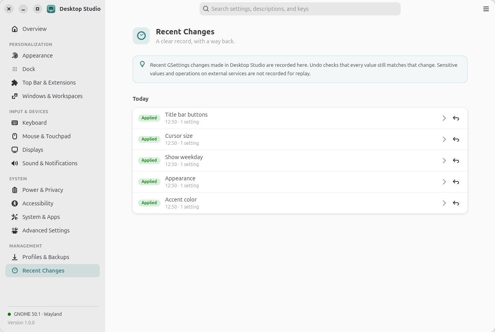
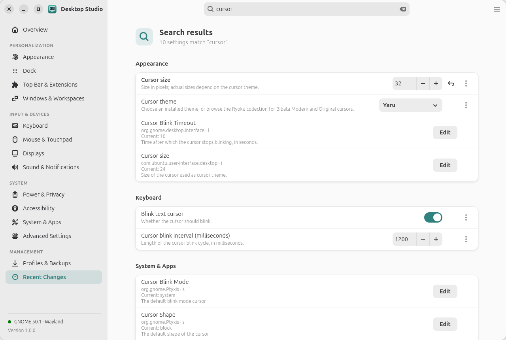

Global search
Search every installed GSettings key, description, and curated label from the header, using Ctrl+F or Ctrl+K.
nome-tweak is a native GTK4 and libadwaita app for Ubuntu and GNOME. It finds what your system actually supports, shows you exactly what will change, and keeps a way back for every edit.


Curated controls for everyday preferences, plus a typed editor for every key your system exposes.
Search every installed GSettings key, description, and curated label from the header, using Ctrl+F or Ctrl+K.
Accent color, themes, fonts, cursors, and backgrounds with a live preview. Ubuntu Dock position, size, and pinned apps.
XKB layouts and modifiers, a shortcut recorder with conflict detection, custom commands, and Toshy Mac-style mappings.
Live Mutter state, arrangement preview, scale, refresh rate, and Night Light. GNOME Shell's Keep / Revert timeout protects every change.
Save, export, and import setups by category. Compare every difference before applying, with an automatic backup first.
Every change is recorded by day. Undo refuses to run if another app has changed the value since.
Title-bar buttons, focus, tiling, and workspaces. Mouse and touchpad speed, scrolling, and tapping, based on detected hardware.
Browse system, application, and extension schemas with type, range, default, and policy lock state, plus a typed editor.
Extension runtime state and preferences, default apps, startup entries, networking, and Bluetooth, through supported GNOME services.
libadwaita all the way down. It follows your light or dark preference, accent color, and right-to-left languages, and adapts to narrow windows.

Curated controls show their effect immediately. Reset appears only for values you've changed.

XKB options are edited one family at a time, so your other options stay as they are.

Your initial configuration is captured once and kept as a permanent restore point.

A day-by-day record of what changed, each entry with its own undo.

Search ranks curated settings above raw schema keys, grouped by category.
Opening the app only reads your configuration. Settings change only when you use a control or explicitly apply a change you've reviewed.
One command adds the signed farvisun APT repository and installs Desktop Studio. Updates then arrive with your normal system updates.
curl -fsSL https://farvisun.github.io/nome-tweak/install.sh | bash# Dependencies (Ubuntu)
sudo apt install python3 python3-gi gir1.2-gtk-4.0 gir1.2-adw-1 \
gir1.2-gdkpixbuf-2.0 librsvg2-common
git clone https://github.com/farvisun/nome-tweak.git
cd nome-tweak
/usr/bin/python3 scripts/install.py
~/.local/bin/desktop-studio# Download the .deb from the latest GitHub release, then:
sudo apt install ./desktop-studio_*_all.deb
desktop-studio
# Or build it locally from a checkout
make package
sudo apt install ./dist/desktop-studio_*_all.debgit clone https://github.com/farvisun/nome-tweak.git
cd nome-tweak
./desktop-studio
# Tests and live, read-only verification
make test
make verifyFree and open source under the MIT license.